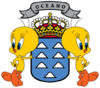

De: La Frikipedia, la enciclopedia extremadamente seria.
De: La Frikipedia, la enciclopedia extremadamente seria. De: La Frikipedia, la enciclopedia extremadamente seria.
| De la serie ciudades del mundo: | |||||
| Los Llanos de Aridane | |||||
| |||||
| Topónimo oficial | Llanero | ||||
| País | España | ||||
| Código postal | 38 no se que mas... 80 | ||||
| Superficie | Mas que S/C de La Palma | ||||
| Altitud | La torre de la iglesia | ||||
| Distancia | Mu cerca | ||||
| Fundación | Cuando El Paso se cansó de estar arrejuntao | ||||
| Población | Mas que en Santa Cruz de La Palma | ||||
| Gentilicio | Llanenero | ||||
| Alcalde | Pablo Pérez Pérez | ||||
| | |||||
Los Llanos de Aridane es un municipio aspañolo, capital de la isla de La Palma y perteneciente a la provincia de Santa Cruz de Chicharrolandia (Canarias). Fue fundada el dia de la fundación de Los Llanos, seguramente antes que S/C de La Palma. con el nombre de Villa de Nosotros somos los Mejores Gallo sobre una llano situado enfrente de una cueva de un tal Aridane. Posteriormente, el rey Felipe II le concedería el título de Muy Noble y Lealmente chachi. En su término municipal se encuentra el Real Santuario de Nuestra Señora la que Vende el Pesaco.
En un día de agosto muy caluroso de hace ya un tiempo, se formó el municipio de Los Llanos, más Tazacorte como ciudaduchas de al rededor
Otro día pero esta vez de abril. se presentó en la diputación provincial de Canarias una proposición de matrimonio por parte de Manolo Calatraba hacia su actual mujer Miriam Loleilola y aparte una persona de El Paso la cual quería separarse de los llanos, con el de Tacande y otros inmediatos, formara un municipio independiente del de Los Llanos, con su propio Ayuntamiento. Unos meses más tarde, El Paso conseguía separarse de los Llanos, que perdía de esta forma una parte considerable de su extesión geográfica.
Tiempo mas tarde, y esta vez durante el mes de septiembre el Gobierno de Primo de Rivera concedió el decreto por el que Tazacorte obtenía la independencia de Los Llanos. En ese momento los llanos se quita un peso de encima, por que aguantar a los bagañetes es una pringada.
Bastantes historiadores de este peculiar y megaultrasuperhiperindutrializado lugar, que parece que lleva años luz al resto de la palma y claramente esto mentira no es, coinciden claramente es que un hecho bastante crucial que ha marcado el desarrollo hacia la mierda iluminación de los llanos claramente ha sido las conquistas canis, que han dado ahora a la ciudad su peculiar toque de muy segura #ironíaOn. Estas conquistar no se le puede atribuir fechas, pero se cree que el nacimiento de hijosdelagraputa cantantes de regaytón tales como Don Omar o El Daddy Yanquee fueron hechos decisivos para que se produjera y siguiera vigente este hecho, además de que parece que los venezolanos y demás sudamericanos de por allá, de un lugar que mejor ni recordar, parecen que no tienen más lugares para emigrar que Canarias. Pero aunque no hay fecha clara se sabe que ya se ha casi completado al 99.99999999999999999999999999999999999999999999999999999999999999999999999999999999999999999999999999999999999999999999999999%, porque todavía parecen que frentes de metaleros y personas decentes como los frikis presentan, aunque débil, importante oposición. Las características de esta conquista son varias. Así, destaca como este, según historiadores, proceso de control mental por el reguetón de los jóvenes (no es que llegarán un día los canis a los llanos y dijera "vamos a hacernos con la ciudad" sino es que el reguetón, através de sus mezclas hipnotizadoras llegó a los llanos y consiguió controlar la mente de los más inútiles y tontacos de la ciudad que parecía que eran bastantes) hizo pues que dichos jóvenes pues se caracterizaran por ser las fieles imágenes de Don Omar y de Dado Yankee, vamos, fotocopias a más no cagar, y que el nuevo motor de la economía llanense fueran los porros y todo tipo de drogas, e igualmente la compravente legal-pirata de discos de Henry Méndez y Pitbull. Tambien generó que los Llanos de aridane sea un lugar con bastante paz, en los montes, donde los canis no llegan porque no hay ropas chulas y demás cosas por el estilo, y que los llanos city pues se haya convertido en un estercolero de violencia, de putas los llanos está lleno de putas, casi todas las mujeres son putas, y que se necesita de la mano de Chuck Norris para ver si se consigue arreglar ese problema.
El himno de Los Llanos de Aridane era una canción de Juan Magán por ahí, va a ser la canción Yo soy Cani de Shu_Morenito_19. Aquí podéis encontrar el enlace: [1]
En este municipio mandan:
|  | Islas Canarias |
|---|---|
| Geografía | |
| El Paso | La Palma | Las Galletas | Los Llanos de Aridane | Tenerife | |
| Personalidades | |
| Aythami Artiles | Pedrito | Pepe Benavente | Raquel del Rosario | |
| Otros | |
| Club Deportivo Tenerife | Coyo | Sancocho | Televisión Canaria |
Autor(es):